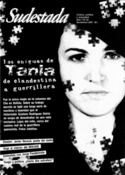

Buscar
Javier Heraud: "A la alegría vamos"
Eligió el cauce de la poesía, renacer en cada viaje y defender a su país y su revolución con las armas y con la vida. Javier Heraud, poeta joven, guerrillero peruano, enamorado, supo escribir versos que sembraron la semilla mientras esperaba, cada noche, que el otoño entrara por la ventana de su habitación. Supo escribir: "Triste Perú, dijimos, aún es tiempo/ de recuperar la primavera". Esta es su historia.
Edición N° 64
Noviembre 2007
Revista bimensual
Comprar edición impresaSumario
- Los enigmas de Tania: de clandestina a guerrillera
- Javier Heraud: "A la alegría vamos"
- Cuadernos de viaje
- La poética de Javier Heraud
- Jorge Fandermole: canciones para un río en disputa
- Ernesto Guevara por los caminos del Perú (segunda parte)
Compartir Articulo
1. Va y viene, Javier, por el patio de la casa. Recorre con tres o cuatro pasos el patio, su tranco largo, la sombra erguida que va y viene, la voz orgullosa recitando esos versos grabados en la memoria. Va y viene, Javier, por el patio. "Yo soy un río/ un río/ un río/ cristalino/ en la mañana./ A veces soy tierno y/ bondadoso. Me/ deslizo suavemente/ por los valles fértiles,/ doy de beber miles de veces/ al ganado, a la gente dócil./ Los niños se me acercan de día,/ y/ de noche trémulos amantes/ apoyan sus ojos en los míos,/ y hunden sus brazos/ en la oscura claridad/ de mis aguas fantasmales...", recita, de memoria.
El patio es escenario. Sus hermanos, curiosos, divertidos, el auditorio atento a sus locuras. Javier, dieciocho eneros, un libro de poemas recién publicado, los bolsillos repletos de versos que se pierden desgranados por el patio, y esa voz que inunda la tarde con el latir de un poema que se sabe de memoria: "Yo soy el río anochecido./ Ya bajo por las hondas/ quebradas,/ por los ignotos pueblos/ olvidados,/ por las ciudades/ atestadas de público/ en las vitrinas./ Yo soy el río,/ ya voy por las praderas,/ hay árboles a mi alrededor/ cubiertos de palomas,/ los árboles cantan/ con mi corazón de pájaro,/ los ríos cantan/ con mis/ brazos...".
Javier se desliza por el patio como una fiera enjaulada, pero está eufórico, pleno. Agota el aire con su marcha ligera, recorre el patio con sus pies gigantes (calza 46, "como Maiakovsky", dice, y se ríe, Javier). Tiene su flamante primer libro de poemas en la mano, y su voz rebota contra las madreselvas del patio, y en los pasillos de la casa, donde su madre lo escucha y sonríe. Donde su padre lo escucha y sonríe y lo provoca: "Yo soy un río, un río... ¿eso es poesía?", lo busca. Javier no se ofende, pero detiene su andar de animal herido. "Ya verán, yo seré el Rimbaud del Perú, escribiré hasta los 21 años y nunca más", responde a la afrenta, burlón. Y sus hermanos se ríen. Y Javier les dice: "Algún día yo seré un poeta famoso, los periódicos hablarán de mí, y mi foto saldrá en las primeras páginas de los diarios". Ese día, cuando tuvo entre sus manos el primer ejemplar del libro, "se sentó a la mesa del comedor a enseñarlo. Lo acariciaba, nos mostraba cada detalle y nos firmaba un ejemplar a mamá, a papá, a cada hermano", recuerda Cecilia, su hermana menor. En el ejemplar destinado a Coco, el mayor, la dedicatoria decía: "Para Jorge (Coco), mi hermano que me contaba historias en la noche, y yo, ingenuamente me dormía siempre sin escuchar el final; mi hermano de sangre y de vida, en este mar de Miraflores, en donde parece hemos encontrado la felicidad. Con un abrazo del muerto de la familia, un abrazo del que siempre estará junto a ti y junto a todos".
Ahora Javier retoma su paso ardoroso, vuelve al verso interrumpido como si nada hubiera pasado, y otra vez el patio es escenario y sus hermanos, platea. Y la voz gigante de Javier llena el corazón de la casa con palabras: "Llegará la hora/ en que tendré que/ desembocar en los/ océanos,/ que mezclar mis/ aguas limpias con sus/ aguas turbias,/ que tendré que/ silenciar mi canto/ luminoso,/ que tendré que acallar/ mis gritos furiosos al/ alba de todos los días,/ que clarear mis ojos/ con el mar./ (...) Todo se disolverá en una llanura de agua,/ en donde un canto o un poema más/ sólo serán ríos pequeños que bajan,/ ríos caudalosos que bajan a juntarse/ en mis nuevas aguas luminosas,/ en mis nuevas/ aguas/ apagadas..."
2. La voz de Elvis Presley que escupía el tocadiscos resonaba en toda la casa. En la habitación de Javier, temblaban el reloj cucú y la foto de su amigo Dégale, vibraban también una muñeca descabezada, su murciélago disecado, el pergamino chino colgado sobre la pared. Ese era el refugio del poeta: allí se desvelaba leyendo en noches eternas. Allí esperaba, impaciente, la llegada del otoño. Allí le escribía a su amigo: "Mi ventana (la de mi cuarto) da a la luna, por ahí sale la luna. ¿Sabes Dégale que quiero poseer la luna? ¡Dénmela, por Dios!". Pero ahora la habitación está vacía, el ruido del tocadiscos viene del comedor, donde Javier y Cecilia bailan un rocanrol vertiginoso. "¡Dale, Flaca!", le grita Javier a su hermana, y la desliza por entre sus piernas abiertas mientras imita los movimientos de Elvis, y no interrumpe el paso hasta que la púa salta del simple y la música se detiene. Entonces aparecen Bill Halley y sus Cometas, o los prohibidísimos mambos de Pérez Prado ("Decían que la iglesia excomulgaba a quienes lo bailaban", recuerda Cecilia).
Barrio de Miraflores, zona acomodada de los suburbios limeños, allí nació Javier un 19 de enero de 1942, después de sus hermanos Coco y Vituca, y antes de Cecilia, Marcela y Gustavo. Su padre, don Jorge Heraud, se multiplicaba para que en su casa no faltara nada y para que sus hijos pudieran estudiar en el mejor colegio de la región: el Markham. Profesor de Historia, pero también abogado y taquígrafo en la Cámara de Diputados por las noches, el padre de los Heraud se hacía un tiempito los fines de semana para sacar a pasear a su legión. Los sábados bien temprano, preparaba su Vauxhall 12 negro, intervenía para evitar las peleas entre hermanos por los asientos que ocuparían, y ponía proa hasta la playa. A veces hasta La Herradura, otras a Pucusana o hasta el río Santa, en Huaraz. De esos viajes, Javier tomaría las imágenes que inspiraron su libro El río...
(La nota completa en la edición gráfica de Sudestada)
-----------
Entrevista con Cecilia Heraud
"No soportaba las injusticias y se rebelaba ante el conformismo"
Hermana menor de Javier, Cecilia Heraud es quien mejor supo detallar el universo interior del poeta a partir de su bellísimo libro biográfico Vida y muerte de Javier Heraud. Con un grado de intimidad único, Cecilia trabajó la vida cotidiana de los Heraud en Miraflores con un talento narrativo que se apoya en la sensibilidad del contacto diario con Javier. Desde Lima, colaboró desde el principio con fotos y materiales inhallables para la elaboración de este dossier sobre su hermano. También con estas respuestas que siguen, y que intentan poner en palabras emociones que mezclan tristezas y alegrías en su memoria.
¿Qué recuerdos de la vida cotidiana y pequeños momentos de intimidad con Javier guarda en su memoria?
Javier, Gordo para la familia, era mi hermano compañero. Era un muchacho franco, espontáneo, idealista, sin temores. Gran lector y amante de la literatura. Aún tengo grabadas escenas de la época privilegiada de nuestra infancia. Javier era una persona adelantada para su tiempo. Recuerdo que me subía al techo de la casa con él y contra la voluntad de mamá. Él me enseñó a fumar con sus cigarrillos sin filtro y de tabaco negro; nos metíamos en su cama a modo de escondernos para que mamá no sintiera el humo y, años después, pensaba en nuestra ingenuidad. Como él me llevaba casi dos años, era mi compañero en las fiestas, ya que cada una de nosotras debía ir acompañada por un hermano hombre, de lo contrario no nos daban permiso. Pero nos divertíamos pues nos gustaba bailar y en casa ensayábamos los pasos de baile. Él cantaba imitando a Elvis Presley, era sumamente animado y le gustaba divertirse. Sé que le gustaba a varias amigas mías.
¿Cómo era el medio donde Javier pasó su infancia? ¿Cuáles eran sus pasiones y sus gustos por entonces?
Vivíamos en el barrio de Miraflores, barrio de clase media alta. El asistía al colegio más caro de Lima, el Markham College. Ahí recibió sólida instrucción y empezó su pasión por la literatura. También en la revista del colegio, publicó su primer poema a los 15 años. Mi padre trabajaba duramente para poder pagar la educación de nosotros seis. Miraflores era un hermoso distrito entonces, con casas llenas de árboles, antiguas, amplias, y no con mucha población, de modo que nos conocíamos muchas familias. Teníamos vecinos; algunos, amigos; otros, no. Cuando alguien nos molestaba, Javier salía a defendernos y hasta tuvo algunas peleas en la calle con vecinos antipáticos. Jugábamos mucho en "el jardín de la entrada/ pequeño pero grande". Jugábamos ping-pong en la mesa del comedor, voley en el jardín... no sé cómo nos aguantaba mi madre. Le gustaba estudiar y hacer deporte; en el colegio fue campeón de salto en largo, tenía unas piernas largas, corría y saltaba con vallas y sin vallas. Era amiguero y asistíamos mucho al cine, otra de sus pasiones. Patinábamos y montábamos bicicleta. Javier y nuestro hermano mayor iban al colegio en bicicleta pues quedaba relativamente cerca. Como en esa época existía el tranvía eléctrico que unía algunos distritos y ellos tenían que cruzar las líneas, mamá siempre le recomendaba al salir, como él recuerda "Javier, no olvides tu gorra/ mira bien al cruzar el tranvía". Todos los veranos íbamos a la playa con nuestros padres o solos, los cinco hermanos mayores, bajábamos "al baño de las piedras" juntos diariamente y luego regresábamos con mucho apetito a almorzar. Javier comía mucho, era muy grande.
¿Cómo es posible comprender la relación de Javier con la poesía? ¿Qué cosas encontraba en ella?
Me percaté de su amor a la poesía desde niña. Hacíamos corazones para regalarle a mamá por el día de la madre, y él escribía en ellos. Desde los 15 años publicó, le gustaba hacerlo y nos leía en voz alta sus poemas. Él comentaba que la poesía debía ser una esperanza para el pueblo, que debería haber muchos poetas que escribieran poesía buena para que incluso se cantara y llegara a todos. En una entrevista que le realizó Mario Vargas Llosa durante su estadía en París, Javier declaró en la radio que quería hacer una poesía narrativa, que se nutriera de la naturaleza, y clara para que fuera entendida por todos.
Asistía a recitales donde él leía sus poemas. Con amigos poetas fundaron La casa de la poesía en Barranco, donde hacían interminables veladas poéticas...
(La entrevista completa en la edición gráfica de Sudestada)
Comentarios
Hugo Montero
Articulos más vistos


LIBRERÍA SUDESTADA

Colección infantil

Distribuidora de Libros

Suscripción

Sudestada en URUGUAY

Otros articulos de esta edición
Los enigmas de Tania: de clandestina a guerrillera
Durante décadas, el trabajo clandestino de la agente Tania permaneció oculto tras el secreto cubano. Se conocía de ella apenas ...
La poética de Javier Heraud
 Entrevista
Entrevista
Jorge Fandermole: canciones para un río en disputa
El compositor y cantante santafesino dialoga en su obra con el universo que lo formó: el río, que acarrea bajo ...
Ernesto Guevara por los caminos del Perú (segunda parte)
En los primeros días de 1952, dos jóvenes aventureros y soñadores partieron de Argentina, iniciando un recorrido que los llevaría ...